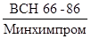
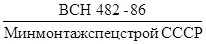
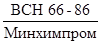
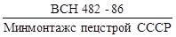
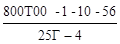
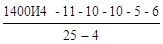
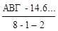
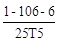

ВЕДОМСТВЕННЫЕ СТРОИТЕЛЬНЫЕ НОРМЫ
ИНСТРУКЦИЯ
ПО РАЗРАБОТКЕ
ПРОЕКТНОЙ ДОКУМЕНТАЦИИ
ДЛЯ СТРОИТЕЛЬСТВА ОБЪЕКТОВ
ХИМИЧЕСКОЙ ПРОМЫШЛЕННОСТИ
С ПРИМЕНЕНИЕМ БЛОКОВ.
ТЕХНОЛОГИЯ ПРОИЗВОДСТВА
 
МИНИСТЕРСТВО
ХИМИЧЕСКОЙ ПРОМЫШЛЕННОСТИ
МИНИСТЕРСТВО МОНТАЖНЫХ И СПЕЦИАЛЬНЫХ СТРОИТЕЛЬНЫХ РАБОТ СССР
МОСКВА 1986
РАЗРАБОТАНЫ
ВНИИмонтажспецстроем Минмонтажспецстроя СССР (д-р техн. наук Б.В. Поповский, инженеры В.Я. Эйдельман - рук. разработки, А.Л. Прудовая - отв. исполнитель, Л.Г. Коновалова, Е.Ю. Исакова, Л.Е. Лоскутова, М.Е. Григорьева, Е.А. Гуляев, О.Ю. Тарасова);
ЦНИИпромзданий Госстроя СССР (И.А. Черепов)
ВНЕСЕНЫ
Главным техническим управлением Минмонтажспецстроя СССР, Управлением проектирования и капитального строительства Минхимпрома (А.Л. Незговоров, Д.М. Барский)
ПОДГОТОВЛЕНЫ К УТВЕРЖДЕНИЮ
Главным техническим управлением Минмонтажспецстроя СССР (Г.А. Сукальский, М.А. Гаврилов, В.И. Капитонов)
Вводится впервые.
|
Министерство химической промышленности Министерство монтажных и специальных строительных работ СССР |
Ведомственные строительные нормы |
  |
|
Инструкция по разработке проектной документации для строительства объектов химической промышленности с применением блоков. Технология производства. |
Вводится впервые |
Настоящие нормы распространяются на проектную документацию для строительства новых, расширения и реконструкции действующих предприятий химической промышленности (в дальнейшем - объект строительства).
Нормы устанавливают технические требования (монтажные) к проектированию технологической части объектов строительства с применением блоков, порядок разработки и правила выполнения технологической части проекта (рабочего проекта) и рабочей документации комплектно-блочным методом.
Нормы должны соблюдаться всеми организациями и предприятиями, участвующими в проектировании объектов химической промышленности и производстве монтажных работ.
1.1. Задание на проектирование, проект (рабочий проект), рабочую документацию необходимо разрабатывать в соответствии с действующими нормативными документами и требованиями настоящих норм.
1.2. Технологическую часть проекта (рабочего проекта) и рабочей документации следует разрабатывать как систему блоков коммуникации и технологических блоков (разработанных в составе проекта или приманенных) в соответствии с номенклатурой, приведенной в обязательном приложении 1.
|
Внесены: Управлением проектирования и строительства Минхимпрома Главным техническим управлением Минмонтажспецстроя СССР |
Утверждены: Минхимпромом
Минмонтажспецстроем
СССР |
Срок введения в действие с 1 сентября 1986 г. |
Технические условия на разработку проектной документации с применением блоков (далее - технические условия) являются неотъемлемой частью задания на проектирование и приводятся в приложении к нему. Контроль за выполнением технических условий осуществляют: генпроектировщик и Гипрохиммонтаж - при разработке проекта (рабочего проекта) и рабочей документации, заказчик и организации, осуществляющие монтаж, - при составлении заключений по проекту и приемке документации для производства работ.
1.4. В проекте (рабочем проекте), рабочей документации, при составлении текстовых документов и в основной надписи графических документов необходимо применять термины, приведенные в обязательном приложении 2.
1.5. При разработке технологической части проекта и рабочей документации следует руководствоваться пособиями ВНИИмонтажспецстроя к настоящим нормам.
2.1. При разработке проекта и рабочей документации должны быть обеспечены:
преимущественное применение в проектах блоков третьей группы (обязательное приложение 1);
автономность блоков от строительных конструкций для оборки их независимо от строительной готовности - в границах блока не должны проходить колонны, балки, ригели, плиты зданий и сооружений, коммуникаций других блоков;
максимальное сокращение вспомогательных конструкций за счет использования инвентарных средств для обслуживания и ремонта, передвижных грузоподъемных средств, обеспечения агрегатно-узлового метода ремонта и др.;
внутрипроектная и межпроектная унификация и типизация проектных решений блоков и их составных частей, использование документации на ранее разработанные блоки;
соединение взаимно пересекающихся блоков с помощью унифицированных вставок, которые должны включать вводы и выводы трубопроводов, идущих в поперечном направлении, лестничные клетки, переходы, анкерные устройства, П-образные компенсаторы;
- сведение к минимуму мокрых процессов подливки, замоноличивания и огнезащиты при установке и закреплении блоков.
2.2. В состав блоков следует включать машины, аппараты, первичные средства контроля и управления, трубопроводы, вспомогательные конструкции (опорные, обслуживающие и др.), тепловую изоляцию и химзащиту.
2.3. В проекте блока должны быть обеспечены:
агрегирование составных частей блока на общих опорных конструкциях в минимальное количество (n) сборочных единиц, габариты которых не должны превышать габаритов, указанных в ТУ на проектирование; агрегирование отключающей, регулирующей и предохранительной арматуры в минимальное количество узлов управления. Лучшее решение блоков I, II и III групп сложности соответствует n=1. Составные части блока, не агрегированные на общих опорных конструкциях, должны иметь самостоятельные опоры, которые устанавливают и закрепляют на фундаментах, перекрытиях и других строительных конструкциях;
применение типовых проектов лестниц и площадок для обслуживания;
применение стандартных составных частей трубопроводов, в т.ч. отборных устройств КИП и А, фильтров и др., применение типовых проектных решений узлов регулирующих клапанов и конденсационных устройств;
жесткость конструкции сборочных единиц, сохранение их целостности при перевозке и установке в проектное положение, а также пуск в эксплуатацию без разборки и ревизии;
применение гибких базовых конструкций в сочетании с инвентарными средствами для создания жесткости при транспортировке и монтаже;
возможность объединения поставочных узлов в монтажные узлы (вставки, разъемы);
минимум выходных трубопроводов за счет их объединения в коллекторы в пределах блока;
совмещение функций различных аппаратов в корпусе одного аппарата, применение погружных насосов, компенсаторов температурных напряжений и др.;
использование несущей способности оборудования для крепления труб, площадок и другого оборудования;
компактность расположения оборудования в блоке за счет сокращения (в пределах действующих норм) расстояния между аппаратами, входящими в блок.
2.4. В блок коммуникаций должны быть включены:
технологические трубопроводы и опорные конструкции под все виды коммуникаций (технологических, КИП и А, электроснабжения, сантехнических, противопожарных, вентиляционной системы и др.):
средства защиты кабельных проводок и импульсных линия от атмосферных воздействий и огня, проходные площадки, переходные мостики и т.п.
2.5. В проекте блока коммуникаций должны быть обеспечены:
зонирование технологических коммуникаций, импульсных линий и электропроводок; унификация опорных конструкций; минимальные затраты материала на опорные конструкции; жесткость опорных конструкций пролетного строения, сохранение их целостности при перевозке и установке в проектное положение с технологическими трубопроводами, покрытыми теплоизоляционными материалами;
доступность для обслуживания в процессе эксплуатации и производства сварочных работ при соединении блоков коммуникаций.
2.6. Компоновка объекта строительства из блоков должна обеспечить:
объединение, как правило, всех трубопроводов, соединяющих блоки, в минимальное количество блоков коммуникаций, которые должны быть сосредоточены в ограниченной по ширине зоне (техническом коридоре);
расположение блоков с крупногабаритным и тяжеловесным оборудованием в основном по внешнему контуру объекта;
наличие монтажных зон для производства работ.
2.7. Блоки должны располагаться вдоль технического коридора в технологической последовательности и в наименьшем количестве рядов по ширине установки.
3.1. Задание на проектирование объектов с применением блоков (в дальнейшем - ЗП) составляют по ВСН 35-81 (МХП) с учетом п.1.2 настоящей инструкции.
3.2. Технические условия на разработку проектной документации с применением блоков (далее - технические условия, ТУ) составляют перед разработкой проекта и уточняют перед разработкой рабочей документации на каждый объект строительства.
3.3. В ТУ приводят требования к составу блоков, к поставочным и монтажным узлам (в том числе их предельные размеры и массу), условия их сборки, транспортирования и монтажа, порядок комплектования строительства оборудованием, в том числе поставку машиностроительными заводами технологических комплектных линий в блочном исполнении, требования к формированию объекта и его компоновочным решениям и другие требования, которые должны быть выполнены в проектной документации с применением блоков.
При поставке комплектного импортного оборудования в ТУ следует привести требования, которые необходимо предусмотреть в контракте, в отношении комплектности, блочности и заводской готовности.
3.4. Технические условия должны включать: исходные данные, составляемые Гипрохиммонтажем, и требования, которые по решению генпроектировщика учитывают при разработке проектной документации с применением блоков.
3.5. Технические условия разрабатывает генпроектировщик с участием проектной организации - разработчика технологической части проекта на основе исходных данных Гипрохиммонтажа, Союзглавхимкомплекта Госснаба СССР и Главкомплектхиммаша Минхиммаша о порядке комплектования строительства оборудованием, а также на основе требований заказчика и других организаций, связанных с применением блоков.
3.6. Гипрохиммонтаж, заказчик и другие организации по письменному запросу генпроектировщика в указанный им срок (но не менее 1 месяца) выдают исходные данные к ТУ.
3.7. Генпроектировщик осуществляет согласование проекта ТУ с организациями, выдавшими исходные данные, и ВНИИмонтажспецстроем. Согласованный проект ТУ должен быть отправлен генпроектировщику не позднее двух недель со дня его получения.
ТУ утверждает заказчик при наличии согласований организаций, указанных в настоящем пункте. Без согласованных ТУ задание на проектирование утверждению не подлежит. При разногласиях по проекту ТУ генпроектировщик созывает совещание заинтересованных организаций. Решение совещания утверждают Управление проектирования и капитального строительства Минхимпрома и главное управление Минмонтажспецстроя СССР, осуществляющее монтаж оборудования и трубопроводов.
3.8. Генпроектировщик направляет ТУ всем организациям - участникам проектирования и Гипрохиммонтажу, который направляет их организациям Минмонтажспецстроя СССР, разрабатывающим ППР и осуществляющим монтаж.
3.9. Перед разработкой рабочей документации следует в соответствии с заключением экспертизы по проекту уточнить технические условия, в том числе:
а) состав блоков;
б) перечень средств для ремонта;
в) перечень средств для транспорта и монтажа;
г) условия поставки оборудования (комплектно или россыпью). Исходные данные для уточнения технических условий по пункту "в" представляет Гипрохиммонтаж, по пункту "а" - разработчик рабочей документации,
по пунктам "б" и "г" - заказчик.
3.10. В случае, если проект разработан без учета требований настоящей инструкции, осуществляют разработку ТУ для рабочей документации с оформлением дополнения к основному заданию на проектирование согласно п.16 приложения 2 СНиП 1.02.01 - 85.
3.11. Исходные данные, которые Гипрохиммонтаж представляет генпроектировщику, должны включать в себя следующие разделы:
а) "Вводную часть", где указывают номер письма генпроектировщика, на основании которого разработаны исходные данные, и перечень организаций, участвовавших в их составлении;
б) "Условия производства работ", где приводят:
наименование организации, осуществляющей монтаж технологического оборудования и технологических трубопроводов;
место нахождения базы для оборки поставочных и монтажных узлов и блоков коммуникаций;
в) "Общие технические требования", где приводят ссылки на нормативные документы, пособия, руководящие материалы (РМ), содержащие требования и технические решения по проектированию объектов с применением блоков;
г) "Требования к составу технологических блоков", включающих в себя фразу "определяет автор проекта в соответствии с обязательным приложением 1 по согласованию с ВНИИмонтажспецстроем";
д) "Требования к компоновочным, объемно-планировочным решениям объекта", содержащие требования к компоновочным решениям в соответствии со СНиП 3.05.05-84, разделом 2 настоящей инструкции; пособиями, содержащими требования и технические решения, обеспечивающие индустриализацию монтажных работ;
е) "Требования к конструкции блоков", где делают ссылку на раздел 2 настоящей инструкции, указывают размеры и массу поставочных и монтажных узлов, приводят требования к опорным конструкциям под поставочные узлы;
ж) "Требования к типизации блоков", в которых указывают на необходимость внутри- и межпроектной типизации блоков и их элементов, приводят рекомендуемый перечень действующих типовых проектных решений;
з) "Требования к системам автоматизации, электроснабжения, тепловой изоляции, химзащиты, промвентиляции и к строительной части проекта (фундаменты и др.)", в которых приводят данные, полученные Гипрохиммонтажем от специализированных институтов Минмонтажспецстроя СССР;
и) "Требования к разработке ПОС", где указывают, что в ПОС должны быть отражены все принципиальные решения, связанные с применением блоков, а также о совместной работой всех организаций Минмонтажспецстроя СССР (по изоляции, химзащите оборудования в блоках, монтажу электрооборудования и НИПиА и др.). При необходимости указывают дефицит производственных мощностей для сборки, транспорта и монтажа блоков оборудования и коммуникаций, объем необходимых капитальных вложений для расширения производственной базы, приобретения транспортных и грузоподъемных средств, строительства дорог, причалов и т.п. В требованиях к стройгенплану указывают размеры площадок укрупнительной сборки монтажных узлов из поставочных (при необходимости), требования к дорогам и стоянкам большегрузных кранов;
к) В составе исходных данных по решению разработчика могут быть приведены дополнительные требования к проектно-сметной документации, обусловленные производством монтажных работ с применением блоков.
3.12. Состав технических условий принимают в соответствии с содержанием исходных данных, изложенных в разделе 3, с включением следующих дополнений:
вид ремонта (агрегатный или поэлементный) с указанием типов оборудования, ремонтируемых по месту, характеристики (или марки) грузоподъемных и транспортных средств, используемых для ремонта;
дополнительных разделов по усмотрению генпроектировщика.
4.1. Разработку технологической части проекта для строительства объектов с применением блоков осуществляют в такой последовательности:
разрабатывают технологическую схему с определением состава блоков;
по схеме группируют блоки одного наименования и рассматривают возможность внутрипроектной унификации;
разрабатывают блок-схему;
определяют компоновку оборудования каждого блока и габаритные размеры блока (с разработкой эскиза на блок);
определяют ширину технического коридора;
компонуют объект из блоков;
выдают задание смежным отделам.
По составу:
блок-схемы;
эскизов блоков (в состав проекта не включают и используют при разработке рабочей документации).
По оформлению:
наносят на технологическую схему границы блоков;
показывают на чертеже расположения оборудования контуры и маркировку блоков.
Правила разработки документов, указанных в п.4.2, приведены в обязательном приложении 3.
5.1. В состав рабочих чертежей технологии производства включают:
рабочие чертежи, предназначенные для монтажа оборудования и трубопроводов (основной комплект рабочих чертежей марки ТХ);
чертежи общих видов технологических блоков, технологических конструкций и нестандартизованного оборудования (машин, аппаратов и грузоподъемных средств), именуемые далее чертежами общих видов.
5.2. Для строительства объектов с применением блоков рабочие чертежи (в дальнейшем РЧ) следует выполнять в соответствии со стандартами СПДС и с учетом требований, изложенных в настоящей инструкции. Рабочим чертежам для монтажа оборудования и трубопроводов следует присваивать марку ТХ (технология производства). Рабочие чертежи следует разрабатывать на основе проекта (рабочего проекта) и уточненных технических условий.
5.3. Рабочие чертежи марки ТХ следует разрабатывать на каждый объект с разделением на технологические узлы.
В состав рабочих чертежей марки ТХ на объект должны быть включены:
общие данные по объекту;
рабочие чертежи марки ТХ на каждый технологический узел в составе основного комплекта и чертежей общих видов блоков.
5.4. Общие данные по рабочим чертежам выполняют согласно ГОСТ 21.102-79 с учетом дополнений, изложенных в настоящем разделе.
5.5. В состав общих данных по рабочим чертежам на объект включают:
перечень основных комплектов технологических узлов, входящих в состав объекта;
схему расположения технологических узлов;
перечень основных комплектов по всем частям проекта;
условные обозначения и изображения, принятые в рабочих чертежах основного комплекта и не установленные стандартами.
В общих данных записывают "повторно применяемые чертежи в различных технологических узлах указаны в перечне прилагаемых документов первого технологического узла".
5.6. Основной комплект марки ТХ на технологический узел должен включать:
общие данные по рабочим чертежам;
схему соединений;
чертежи расположения оборудования и трубопроводов со спецификацией.
5.7. Разработку рабочих чертежей осуществляют в такой последовательности:
по технологической схеме уточняют схемы соединений и количество оборудования внутри блока;
проводят внутрипроектную унификацию по составу и схемам соединения
блоков I и II групп;
наносят все межблочные связи на блок-схему, разработанную в проекте;
по эскизам блоков, выполненным в проекте, разрабатывают чертежи блоков в соответствии с требованиями раздела 2 настоящей инструкции;
выдают смежным отделам задания на разработку в блоке опорных конструкций, контроля и управления, электроснабжения, местных вентиляционных систем, химзащиты и тепловой изоляции;
уточняют (в соответствии с рабочими чертежами) компоновку технологического узла, выполненную в проекте (рабочем проекте);
разрабатывают чертежи расположения оборудования и трубопроводов из блоков;
выдают смежным отделам задание на выполнение рабочих чертежей.
5.8. При выполнении рабочих чертежей марки ТХ и чертежей общих видов блоков необходимо соблюдать правила, приведенные в обязательном приложении 4.
обязательное
|
№ п/п |
Блок |
Обозначение |
Группа |
Состав блока |
|||||||
|
основной аппарат |
Узлы вспомогательного назначения |
||||||||||
|
теплообмена |
нагнетания |
хранения |
перекачки |
фильтрации |
вакуум-насос |
воздуходувка |
|||||
|
1 |
2 |
3 |
4 |
5 |
6 |
7 |
8 |
9 |
10 |
11 |
12 |
|
1 |
Абсорбции |
БА |
III |
Абсорбер |
+ |
+ |
+ |
+ |
- |
- |
+ |
|
2 |
Вакуумирования |
БВак |
III |
Вакуум-насос |
+ |
+ |
+ |
- |
- |
- |
- |
|
3 |
Выпаривания |
БВ |
III |
Выпарной аппарат |
+ |
+ |
+ |
- |
- |
+ |
- |
|
4 |
Дистилляции |
БД |
III |
Колонна |
+ |
+ |
+ |
+ |
- |
+ |
- |
|
5 |
Конденсации |
БКон |
I |
Кожухотрубчатый конденсатор |
- |
- |
- |
- |
- |
- |
- |
|
6 |
Компремирования |
БКом |
I |
Компрессор |
- |
- |
- |
- |
- |
- |
- |
|
7 |
Нагрева |
БНагр |
I |
Печь |
- |
- |
- |
- |
- |
- |
- |
|
8 |
Нагнетания |
БН |
I |
Насос |
- |
- |
- |
- |
- |
- |
- |
|
9 |
Отстаивания |
БОт |
III |
Отстойник |
+ |
+ |
+ |
- |
- |
+ |
- |
|
10 |
Охлаждения |
БОх |
I |
Кожухотрубчатый холодильник |
- |
- |
- |
- |
- |
- |
- |
|
I |
Аппарат воздушного охлаждения |
- |
- |
- |
- |
- |
- |
- |
|||
|
11 |
Перекачки |
БП |
II |
Емкость |
- |
+ |
- |
- |
- |
- |
- |
|
12 |
Сепарации |
БС |
III |
Сепаратор |
+ |
+ |
+ |
- |
- |
- |
- |
|
13 |
Смешения |
Бсмеш |
III |
Смеситель |
+ |
+ |
+ |
+ |
- |
- |
- |
|
14 |
Сушки |
БСуш |
III |
Сушилка |
+ |
+ |
+ |
- |
+ |
- |
+ . |
|
15 |
Теплообмена без изменения агрегатного состояния |
БТ |
I |
Кожухотрубчатый теплообменник |
- |
- |
- |
- |
- |
- |
- |
|
I |
Испаритель |
- |
- |
- |
- |
- |
- |
- |
|||
|
16 |
Фильтрования |
БФ |
III |
Фильтр |
+ |
+ |
+ |
+ |
- |
+ |
+ |
|
17 |
Химпроцесса |
БХ |
III |
Реактор |
+ |
+ |
+ |
+ |
+ |
+ |
+ |
|
18 |
Центрифугирования |
БЦ |
III |
Центрифуга |
- |
+ |
+ |
+ |
- |
- |
- |
|
19 |
Экстрагирования |
БЭ |
III |
Экстрактор |
+ |
+ |
+ |
- |
- |
- |
- |
|
20 |
Электролиза |
БЭл |
I |
Электролизер |
- |
- |
- |
- |
- |
- |
- |
Примечания:
1. Определение понятия "группа блоков" см. в приложении 2.
2. Состав блоков указан ориентировочно.
3. Для узлов вспомогательного назначения используют, как правило, блоки I группы. В случаях, когда блоки I группы входят в состав блоков II и III групп, а I и II группы - в III группу, они являются узлами соответствующего блока.
обязательное
|
Термин |
Определение |
|
1 |
2 |
|
Технологический блок (сокращенно - блок) |
Конструктивно законченные, автономные от строительных конструкций сборочная единица или комплекс максимальной заводской готовности для реализации процессов, приведенных в приложении 1. Примечания: 1. Блок состоит из основного аппарата и узлов вспомогательного назначения. 2. Различают три группы блоков в зависимости от состава: I группа - блоки, состоящие из аппаратов и машин одного наименования, II группа - блоки, в составе основного аппарата и узла вспомогательного назначения одного наименования, III группа - блоки в составе основного аппарата, двух и более узлов вспомогательного назначения |
|
Узел вспомогательного назначения (УВН) |
Часть блока II и III групп, выполняющая вспомогательные технологические функции. Примечание. В качестве узлов вспомогательного назначения, как правило, используют блоки I и II групп |
|
Блок коммуникаций |
Объединенные в сборочную единицу коммуникации и опорные конструкции под них |
|
Поставочный узел (ПУ) |
Технологический блок или его часть, габариты и масса которых соответствуют транспортным средствам, предусмотренным проектом организации Примечание. Поставочные узлы должны быть собраны на предприятии-изготовителе на общих опорных конструкциях |
|
Монтажный узел (МУ), монтажный блок |
Технологический блок или его часть, которая может быть установлена в проектное положение грузоподъемными средствами, предусмотренными проектом организации строительства. Примечание. Монтажный узел состоит из одного или нескольких поставочных узлов |
|
Комплекс |
Два и более специфицированных изделия, не соединенных на предприятии - изготовителе сборочными операциями, но предназначенных для выполнения взаимосвязанных эксплуатационных функций (по ГОСТ 2.101-68) |
|
Сборочная единица |
Изделие, составные части которого подлежат соединению между собой на предприятии-изготовителе сборочными операциями (по ГОСТ 2.101-68) |
|
Заводская готовность |
Уровень завершенности изготовления изделия при передаче его в монтаж. Примечания: 1. Завершенность изготовления измеряется трудоемкостью монтажа или эквивалентными показателями (количество ПУ, соединений и т.п.). 2. Правила определения уровня заводской готовности устанавливают в нормативных документах |
|
Монтажная готовность |
Уровень завершенности оборки изделия перед установкой его в проектное положение |
|
Опорная конструкция |
Конструкция, на которой собирают составные части блока. Примечание. Следует различать постоянные опорные конструкции, используемые при эксплуатации блока, и временные (инвентарные), используемые для транспортировки и установки в проектное положение |
обязательное
1. Технологическая схема
1.1. На технологическую схему штрихпунктирными линиями наносят границы блоков.
1.2. Состав блока определяют в соответствии с обязательным приложением 1.
1.3. Блокам дают обозначения.
Пример обозначения блока: БД-01-12, где БД - блок дистилляции - по номенклатуре (обязательное приложение 1);
01 - номер технологического узла;
12 - номер по порядку.
1.4. На схеме приводят экспликацию оборудования по блокам.
1.5. Рекомендуемое оформление схемы приведено на рис. 1.
2. Составление блок - схемы
2.1. Назначение блок-схемы - определить оптимальную последовательность расположения блоков при компоновке объекта (с минимумом трубопроводов и наименьшими энергетическими и тепловыми потерями).
2.2. На блок-схему наносят блоки и основные трубопроводы, определяющие выполнение условий п. 2.1.
2.3. Блоки изображают в виде квадратов с обозначением в соответствии с п. 1.3.
2.4. На трубопроводах приводят обозначение диаметров и материала труб.
2.5. На входных и выходных трубопроводах дают обозначение транспортируемого продукта.
2.6. Рекомендуемый пример выполнения блок-схемы приведен на рис. 2.
3. Компоновка блока
3.1. Компоновку осуществляют на опорной модульной сетке с размерами ячейки 1,5´1,5 м. Размеры блока в плане должны быть кратными 1,5 м, конфигурация блока - прямоугольной. Максимальная ширина блока не должна превышать для взрывоопасных производств при расположении на открытой установке и в одноэтажном здании 12 м, а в многоэтажном здании - величину пролета; размер другой стороны не ограничен. По периметру блока должна быть оставлена для прохода свободная от оборудования зона шириной 375 мм.
Пример компоновки блока приведен на рис. 3.
При компоновке блока должны быть предусмотрены:
трассировка основных трубопроводов, определяющих компоновку и размер блока с учетом блок-схемы;
|
8 |
||||||
|
7 |
БД 01-09 Н-103 |
Блок дистилляции Насос НК65/35-70 |
615´725´1750 |
1 3 |
Каталог "Насосы центроб." |
|
|
6 |
Т-102 |
Теплообменник F=125 м2  |
Æ800 =5000 |
2 |
ГОСТ 15122-69 |
|
|
5 |
Е-101 |
Емкость V=10 м3 |
Æ2000 =4000 |
1 |
Каталог "Емкость ст. свар." |
|
|
4 |
Н-101 |
Насос К 45/55 |
505´565´1390 |
2 |
Каталог |
|
|
3 |
Т-104 |
Кипятильник  |
Æ1400 =5900 |
2 |
ГОСТ 15119-69 |
|
|
2 |
ХВ-101 |
Воздушный конденсатор  |
4700´4500´8300 |
1 |
ОСТ 26-02-176-70 |
|
|
1 |
К-101 ЕД С1-12 |
Колонна Блок дистилляции |
Æ2800, Н=25500 |
ст. угл., ст. нж. |
1 1 |
БСУ… |
|
№ п/п |
№ по схеме |
Наименование |
Характер. |
Матер. |
Кол. |
Прим. |
Рис. 1. Пример разбивки технологической схемы на блоки
Рис. 2. Пример выполнения блок-схемы
ТРЕБОВАНИЯ К КОНСТРУИРОВАНИЮ БЛОКОВ
Рис. 3. Компоновка блоков II группы сложности
демонтаж оборудования или отдельных его узлов передвижными грузоподъемными или другими грузоподъемными средствами, указанными в задании на проектирование;
компактность расположения оборудования с соблюдением минимальных нормативных разрывов между машинами и аппаратами;
соблюдение требований инструкции в рамках детализации разработки, принятой в проекте.
3.2. Выполняют эскиз блока. Пример выполнения эскиза приведен на рис.4. На эскизе приводят план и разрез блока, необходимые для понимания его компоновки, и экспликацию на блок. На эскизе блока наносят оси блока, привязочные размеры оборудования к осям блоков и габаритные размеры. При заполнении граф экспликации, касающихся массы блока, следует учитывать все составляющие блока (оборудование, трубопроводы, металлоконструкции, изоляцию и т.д.). Масса трубопроводов и металлоконструкций может быть определена
Мтр.=0,15¸0,2 Моб.;
Ммк.=0,1¸0,15 Моб.;
Моб. - масса оборудования;
Мтр. - масса трубопроводов;
Ммк - масса металлоконструкций.
4. Компоновка объекта (корпуса, отделения и т.д.) из блоков
4.1. Компоновку объекта осуществляют на основе двух элементов - технологических блоков и блоков коммуникаций.
4.2. Для компоновки объекта необходима следующая информация:
блок-схема объекта;
полный набор блоков с размерами компоновочных габаритов и вводами-выводами коммуникаций;
отметки расположения блоков.
4.3. Компоновку объекта осуществляют в такой последовательности (рис. 5, 6):
на опорной модульной сетке (1500´1500 мм) намечают трассу технического коридора;
с обеих сторон технического коридора определяют зоны размещения блоков; при этом связь между двумя рядом стоящими блоками осуществляется по грани примыкания блоков друг к другу; связь с другими блоками, вход (выход) с установки и связь с коллекторами прокладывают в техническом коридоре;
намечают места расположения лестничных клеток, проходов и пр.;
в соответствии с блок-схемой и информацией о блоках, а также исходя из энергетических потерь, расхода легированных труб и др. определяют объемно-планировочную структуру объекта;
На рисунке обозначены размерные линии, размеры условно не показаны
Рис. 4.
Пример выполнения эскиза блока
|
Марка, состав блока, поз. по техн. схеме |
Чертеж тип. сбор. ГОСТ, ТУ |
Масса оборудов. |
Масса труб |
Вес в опорных констр., т |
Вес вспомог. констр., т |
Общая масса |
|||
|
Собств. т |
Экспл. т |
Собств. т |
Экспл. т |
Соб. т |
Эксп. т |
||||
|
К-101 |
Черт. 4250000 ВО |
55,9 |
8,35 |
13,8 |
|||||
|
ХВ-101 |
ОСТ 26-02-176-70 АВГ-14,6 Ж 5-53-В3 8-1-2 |
24,13 |
1,85 |
3,59 |
|||||
|
Е-101 |
Каталог емкости 1310000 ВО |
2,164 |
2,3 |
3,6 |
|||||
|
Т-102 |
ГОСТ 15122-69 800 ТНГ  |
6,8 |
3,21 |
7,53 |
|||||
|
Т-104 |
ГОСТ 15119-68 1400ИН-11-10-10 |
21,14 |
3,1 |
6,6 |
|||||
|
Н-103 |
Каталог "Насосы центробежные |
2,295 |
3,7 |
7,2 |
0,6 |
6,6 |
|||
|
Н-101 |
Каталог |
0,65 |
0,7 |
1,3 |
0,3 |
1,6 |
|||
|
Коммуникации |
|||||||||
|
Опорная конструкция блока |
|||||||||
|
ИТОГО: |
|||||||||
БД 01-12
Основная надпись по ГОСТ 21.103-78
ФОРМИРОВАНИЕ ОБЪЕКТА
Рис. 5. Первый этап компоновки объекта - определение объемно-планировочной структуры
ФОРМИРОВАНИЕ ОБЪЕКТА
Рис. 6. Второй этап компоновки объекта - размещение блоков:
а - на нулевой отметке; б - на отметке 6,00 м
на основе информации о блоках составляют схему трассировки технологических коммуникаций;
определяют ширину и число ярусов технического коридора в такой последовательности:
определяют количество технологических трубопроводов, проходящих по коридору;
определяют наличие в техническом коридоре электроснабжения, КИП и А, вентиляции и т.д.;
определяют схему их зонирования;
выбирают вариант технического решения коридора (рис.7).
4.4. По компоновочным габаритам блоков и отметкам их расположения с учетом размеров технического коридора определяют ширину, протяженность и число этажей объекта.
Рис. 7. Варианты решений технического коридора и область применения
ФОРМИРОВАНИЕ ОБЪЕКТА
Рис. 8. Схема трассировки технического коридора:
1 - технический коридор; 2 - зоны размещения блоков
4.5. Блоки можно компоновать по двум схемам - однорядной и многорядной.
4.6. При компоновке объекта блоки устанавливают вплотную друг к другу по компоновочному габариту.
4.7. Трассировка технического коридора, а следовательно, и компоновка объекта в целом в зависимости от конкретных условий может быть линейной, крестовой, фигурной и пр. (рис.8).
4.8. Оформляют чертеж компоновки объекта. Пример выполнения приведен на рис.9. На чертеже приводят планы, разрезы и экспликацию блоков и наносят:
размеры объекта;
размеры блоков;
привязочные размеры блоков к строительным конструкциям;
позиции блоков.
4.9. В соответствии с разработанной компоновкой объекта на эскизе блока уточняют ориентацию трубопроводов.
План на отм. 0.000 м
На рисунке обозначены размерные линии.
Размеры условно не показаны.
|
3 |
Блок дистилляции |
БД-01-08 |
1 |
7500 |
9000 |
||
|
2 |
Блок дистилляции |
БД-01-09 |
1 |
12000 |
13500 |
||
|
1 |
Блок дистилляции |
БД-01-12 |
1 |
10500 |
15000 |
||
|
№ п/п |
Наименование блока |
Обозначение блока |
Кол. блоков |
В |
Н |
L |
Масса |
|
Размеры, мм |
|||||||
Основная надпись по ГОСТ 21.103-78
Экспликация блоков
Рис. 9.
обязательное
I. ПРАВИЛА ВЫПОЛНЕНИЯ РАБОЧИХ ЧЕРТЕЖЕЙ МАРКИ ТХ
1. Общие данные по рабочим чертежам на технологический узел
1.1. Общие данные по рабочим чертежам приводят согласно ГОСТ 21.102-79 с учетом дополнений, изложенных в настоящем разделе.
1.2. В состав данных по рабочим чертежам при наличии технологических узлов включают схему их расположения, указывая на ней:
границы и номера технологических узлов;
вводы и выводы трубопроводов с привязкой к координационным осям и отметкам трубопроводов. Для групповых вводов и выводов допускается привязка только к осям крайних трубопроводов или осям подводящих эстакад.
К схеме прилагают ведомость технологических узлов по приводимой ниже форме.
|
Номер узла по схеме |
Наименование технологического узла |
Степень огнестойкости |
Категория по взрыво- и пожарной опасности |
Группа вредности производственных процессов |
Примечание |
Пример оформления схемы расположения технологических узлов и ведомости технологических узлов приведен на рисунке.
1.3. В раздел "Прилагаемые документы" ведомости ссылочных и прилагаемых документов записывают спецификацию оборудования по ГОСТ 21.110-82; включают ведомость потребности в материалах по ГОСТ 21.109-80, ведомости объемов строительных и монтажных работ по ГОСТ 21.111-84, а также другие документы, составленные в дополнение к соответствующему основному комплекту рабочих чертежей.
1.4. В общих указаниях, кроме сведений, предусмотренных ГОСТ 21.102-79, приводят:
условия хранения блоков по ГОСТ 15150-69 и другие технические указания, соблюдение которых обязательно при монтаже блоков;
характеристику межблочных коммуникаций по приводимой ниже форме.
В графах указывают:
В графе "Обозначение" - обозначение трубопроводов согласно схеме соединений технологического узла;
|
Номер узла по схеме |
Наименование технологического узла |
Категория опасности и группа вредности |
Дополнительные указания |
||
|
Огнестойкость |
Взрыво- пожароопасность |
Вредность |
|||
|
101 |
Прием и очистка сырья |
II |
А |
IIIа |
|
|
102а |
Компрессия |
I |
А |
IIIа |
|
|
102б |
Очистка газа |
I |
А |
IIIа |
|
|
102в |
Насосная |
I |
А |
IIIа |
|
Схема расположения технологических узлов
|
Обозначение |
Наименование транспортируемого продукта |
.Категория трубопровода |
Рабочие условия трубопровода |
Испытание |
Давление испытания, МПа |
Дополнительные указания |
|
|
температура, °C |
давление, МПа |
||||||
в графе "Наименование транспортируемого продукта" - наименование или номер транспортируемого продукта;
в графе "Категория трубопровода" - категорию и группу трубопровода в соответствии с действующими нормативными документами;
в графе "Рабочие условия трубопровода" - параметры транспортируемого продукта (в графе "Температура" - максимальная положительная или минимальная отрицательная температура транспортируемого продукта, установленная технологическим регламентом;
в графе "Давление" - избыточное максимальное давление, развиваемое источником давления (насосом, компрессором и т.п.), или давление, на которое должны быть отрегулированы предохранительные клапаны);
в графе "Испытание" - вид испытания (на прочность, герметичность) и способ (гидравлическое, пневматическое) испытания на прочность;
в графе "Дополнительные указания" - дополнительные указания по испытанию на герметичность (время испытания и величина падения давления), требования к внутренней поверхности трубопровода после испытания, продувки, очистки и дополнительной обработки.
Ниже приведен пример заполнения характеристик трубопроводов.
ХАРАКТЕРИСТИКА ТРУБОПРОВОДА
|
Обозначение |
Наименование транспортируемого продукта |
Категория, трубопровода |
Рабочие условия трубопровода |
Испытание |
Давление испытания, МПа |
Дополнительные указания |
|
|
температура, °С |
Давление, МПа |
||||||
|
1 |
2 |
3 |
4 |
5 |
6 |
7 |
8 |
|
3 |
Пар |
III А |
200 |
0,6 |
Гидравлическое |
0,9 |
- |
|
11 |
Конденсат |
IV Б |
160 |
0,6 |
0,9 |
- |
|
|
27 |
Антифриз прямой |
V |
40 |
0,6 |
0,9 |
- |
|
|
65 |
Вода охлажденная прямая |
V |
20 |
0,6 |
0,9 |
- |
|
|
66 |
Вода охлажденная обратная |
V |
35 |
0,6 |
0,9 |
- |
|
|
110 |
Легкая фракция |
II |
47 |
0,6 |
0,9 |
- |
|
|
116 |
Сырье |
III |
20 |
1,0 |
1,3 |
||
|
134 |
Масло прямое |
IV |
25 |
0,6 |
0,9 |
- |
|
1.5. Обозначение комплекта (РЧ) в основной надписи включает в себя:
шифр производства, номер корпуса, обозначение марки РЧ и номер технологического узла:
|
ххх - |
хх - |
хх. |
х |
|||||
|
номер технологического узла |
||||||||
|
обозначение марки РЧ |
||||||||
|
номер корпуса |
||||||||
|
шифр производства |
||||||||
Пример: 001 - 1 - ТХ.1.
001 - шифр производства;
1 - первый корпус;
ТХ - технология производства;
1 - первый технологический узел.
2. Схема соединений
2.1. Схему соединений (монтажную) выполняют по ГОСТ 2.701-76 с учетом правил, изложенных в настоящем разделе.
2.2. На схеме указывают:
блоки - в виде прямоугольников (тонкой сплошной линией);
машины и аппараты - условными или упрощенными графическими изображениями (оплошной тонкой линией);
трубопроводы, арматуру, фланцы, компенсаторы и устройства, устанавливаемые на трубопроводах для контроля и управления, конденсационные устройства - сплошной толстой основной линией;
трубопроводы (соединяющие блоки оборудования и блоки коммуникаций) -вертикальными линиями;
трубопроводы (входящие в блок коммуникаций) - горизонтальными линиями;
направление потока продукта.
2.3. При трех и более аппаратах или машинах с одинаковой обвязкой трубопроводов на схеме указывают только один аппарат или машину с обвязочными линиями и обозначением количества таких аппаратов и последовательности их соединения.
2.4. На схему наносят:
цифровое или буквенно-цифровое обозначение трубопроводов в соответствии с чертежами расположения оборудования;
обозначение арматуры и устройств, устанавливаемых на трубопроводах для контроля и управления;
обозначение предохранительных клапанов и величину давления МПа (кгс/см2), на которые они должны быть отрегулированы;
конденсационные устройства;
условный диаметр и материал труб (кроме углеродистых сталей);
позиционное обозначение блоков, машин и аппаратов в соответствии со спецификацией оборудования;
наименование транспортируемого продукта и его параметры на вводах и выводах трубопроводов в технологический узел.
2.5. Обозначения на схеме указывают на полках общей линии-выноски.
3. Чертежи расположения оборудования и трубопроводов
3.1. Чертежи расположения оборудования и трубопроводов (в дальнейшем - чертежи расположения) выполняют по ГОСТ 21.101-79 и с учетом правил, изложенных в настоящем разделе. В составе чертежей расположения приводят планы, разрезы, сечения и фрагменты планов и разрезов, достаточные для определения количества и пространственного расположения оборудования, подлежащего монтажу.
3.2. Чертежи расположения выполняют в масштабе:
планы и разрезы - 1:50;
сечения, фрагменты планов и разрезов - 1:10; 1:20; 1:50.
3.3. На чертежах расположения контуры строительных конструкций изображают тонкой основной линией. Толстой основной линией указывают:
технологические блоки и блоки коммуникаций;
грузоподъемные средства;
металлоконструкции (лестницы, площадки и т.д.);
межблочные трубопроводы (трубы, арматуру, компенсаторы, опоры, устройства для контроля и управления, фильтры, конденсационные устройства и др.);
каналы и лотки.
3.4. На чертеже расположения оборудования и трубопроводов наносят:
позиционное обозначение блоков оборудования и коммуникаций, лестниц и площадок в соответствии со спецификацией чертежа;
обозначение (цифровое или буквенно-цифровое) блоков, межблочных коммуникаций и трубопроводов, не вошедших в блоки коммуникаций;
оси строительных конструкций;
размеры, определяющие положение блоков, составных частей блоков коммуникаций и участков трубопроводов;
величину и направление уклонов трубопроводов.
3.5. Блоки коммуникаций изображают на чертеже расположения с обозначением их границ толстой основной линией. Отдельные чертежи на блоки коммуникаций не разрабатывают. В блоке коммуникаций одним номером (номер линии) обозначают прямой участок и ответвление от него до границы пролетного строения. Ответвление, как правило, заканчивают деталью трубопровода (отводом). Участок трубопровода от границы блока коммуникаций до границы технологического блока (в дальнейшем - участок трубопровода) обозначают номером линии и номером участка. Например, в блоке коммуникаций линия обозначена № 127, а участки, соединяющие блок коммуникаций о технологическим блоком, - 127/1, 127/2 и т.д.
3.6. Технологические блоки изображают упрощенно в виде прямоугольников. В прямоугольнике показывают контур основного аппарата и точки ввода и вывода трубопроводов из блока. Допускается приводить контуры и другого оборудования.
3.7. Спецификацию к чертежу расположения оборудования и трубопроводов составляют по приводимой ниже форме.
|
Позиция |
Обозначение |
Наименование |
Количество |
Масса, кг |
.Примечание |
В графе "Обозначение" указывают спецификации блоков и других составных частей технологического узла. Детали указывают номером чертежа.
Составные части технологического узла в спецификации записывают в такой последовательности:
документация (указывают чертеж расположения оборудования и схему соединений);
технологические блоки;
блоки коммуникаций;
трубопроводы и оборудование вне блоков;
участки трубопроводов от блоков коммуникаций к технологическим блокам.
II. ПРАВИЛА ВЫПОЛНЕНИЯ РАБОЧИХ ЧЕРТЕЖЕЙ ОБЩИХ ВИДОВ БЛОКОВ
1. Общие положения
1.1. Полный комплект рабочих чертежей технологического блока (далее - документация на блок) включает в себя:
спецификацию;
чертежи общего вида;
комплекты чертежей составных частей блока, указанные в разделе Б спецификации (см. п.2.1 данного приложения).
1.2. Документация на блок должна быть выполнена в соответствии с разделом 3 и приложением 1 ГОСТ 21.101-79 и содержать полную информацию, необходимую для:
комплектации блока изделиями и материалами поставки заказчика и подрядчика;
складирования, транспортирования, монтажа и индивидуальных испытаний блока и его составных частей;
разработки деталировочных чертежей трубопроводов и металлических конструкций.
1.3. При разработке документации на блок должны быть обеспечены:
возможность повторного использования документации на блоки I и II групп сложности;
внутрипроектная типизация блоков и на их основе разработка групповых чертежей;
рациональное использование типовых и повторно применяемых чертежей блока.
1.4. Документацию на блок рекомендуется разрабатывать в такой последовательности:
составить схему соединения блока с указанием основного и вспомогательного оборудования и трубопроводов;
на схеме соединения определить узлы, на которые ранее были разработаны чертежи блоков I и II групп сложности, а также те, на которые могут быть разработаны групповые чертежи;
сгруппировать аналогичные узлы, выделенные в других блоках, разработанных в проекте объекта строительства.
2. Спецификация
2.1. Спецификацию выполняют как отдельный документ, состоящий из следующих разделов:
А. Документация.
Б. Составные части блока, изготавливаемые по отдельной документации (в том числе, нестандартное оборудование и изделия).
В. Участки трубопроводов (далее - трубопроводы).
2.2. Спецификацию выполняют по форме образцов, приведенных в пособии. При выполнении раздела В на ЭВМ для него допускается форма машинно-ориентированного документа, который помещают после разделов А и Б, в качестве последующих листов спецификации.
2.3. Перед разделом А приводят заголовок "Документация". Между разделами необходимо оставлять свободную строку. Допускается резервировать строки и номера позиций, заполняя их при необходимости. Наименование трубопровода записывают против его номера позиции на одной отроке во всех графах спецификации.
2.4. Основные надписи на первом и последующих листах - по ГОСТ 2.104-68; подписи на машинно-ориентированном документе - в соответствии с установленными правилами.
Обозначение в основной надписи спецификации блока* и его составных частей должно включать в себя следующие элементы:
|
ХХХХ |
00. |
00. |
00. |
||||||||
|
деталь, входящая в блок или составную часть |
|||||||||||
|
подсборка (подузел) блока |
|||||||||||
|
сборка (узел) блока |
|||||||||||
|
тип блока |
|||||||||||
|
обозначение блока по приложению 1 |
|||||||||||
|
обозначение технологического узла, принятое в п.1.5 настоящего раздела |
|||||||||||
*При изготовлении блока и его составных частей маркировка включает обозначение в основной надписи.
Для блоков III группы сложности допускается указывать их назначение в технологическом процессе (например: Блок химпроцесса. Полимеризация).
2.5. Графы спецификации заполняют следующим образом:
а) в графе "Позиция" указывают позиции составных частей блока (разделы Б и В). Для раздела А и элементов трубопроводов (раздел В) графу не заполняют.
б) в графе "Обозначение" указывают:
в разделе А - обозначение чертежа блока согласно его основной надписи;
в разделе Б - обозначения спецификаций составных частей, обозначения аппаратов по каталогам и наименования каталогов, а для нестандартных деталей - номера чертежей;
в разделе В - обозначение каталогов или чертежей на детали трубопроводов.
в) в графе "Наименование" указывают:
в разделе А - наименования документов (чертеж блока, схема);
в разделах Б и В - наименования изделий в соответствии о основной надписью их спецификации или чертежа (для деталей), а для стандартных изделий - наименования и обозначения в соответствии с документом на поставку (стандарт, ТУ и др.) и с указанием обозначений этих документов;
г) в графе "Количество" - количество наименований, обозначенных одной позицией на чертеже. В разделе "В" графу "Количество" заполняют для изделий и материалов, из которых собирают участок трубопровода, указанный под соответствующим номером позиции (для изделий - в штуках, а для труб одной марки - в метрах);
д) в графе "Примечание" указывают дополнительные сведения, относящиеся к записанным в спецификацию изделиям, материалам и документам, в том числе: единицы измерения материалов (масса или длина), наличие изоляции. В этой графе при наличии комплекта поставки арматуры (фланцы, прокладки, крепеж) делают запись "Комплект". При отсутствии в примечании такой записи вое элементы должны быть указаны в спецификации.
3. Чертеж общего вида блока
3.1. Чертеж общего вида блока (далее ВО) выполняют как отдельный документ. Основную надпись заполняют в соответствии с п.2.4 настоящего приложения, указывая в обозначении шифр документа ВО.
Пример заполнения приведен в пособии к настоящей инструкции.
3.2. На чертеже ВО приводят:
изображение блока в плане, разрезах, сечениях и видах с указанием размеров и позиций;
схему соединений (монтажную);
таблицу входов и выходов трубопроводов;
указания по изготовлению, испытанию, транспортированию, складированию и монтажу блоков.
3.3. Изображение блока выполняют оплошной толстой основной линией:
оборудование - условными изображениями, принятыми в проектной организации;
трубопроводы (трубы, отводы, тройники) - одной линией (соевой). Границы отводов и тройников обозначают чертой; допускается изображать трубопровод двумя линиями, если это диктуется условиями разработки чертежа;
арматуру, переходы, закладные части КИП и А и фланцы - условными изображениями, принятыми для схем. Фланцы к арматуре, поставляемые комплектно, на чертеже не изображают;
примененные составные части блока по ранее разработанным чертежам (в том числе, типовым) - прямоугольником с указанием точек присоединения. Внутри прямоугольника должен быть нанесен контур основного аппарата и его оси;
опорные конструкции и обслуживающие площадки, входящие в состав блока, разрабатывают в объеме КМ и включают в комплект чертежей на блок.
При необходимости объединения двух и более составных частей блока, имеющих собственные опорные конструкции, в поставочный узел или монтажный узел, на объединяющую конструкцию должен быть разработан чертеж КМ, а сама конструкция в спецификации учтена под отдельным номером позиции. При необходимости изображения строительных и других конструкций, не учитываемых в спецификации блока, их наносят на чертеже тонкими сплошными линиями. Изображение блока в плане, на разрезах, видах и сечениях должно быть достаточным для однозначного определения взаимного положения его составных частей, конфигурации трубопроводов и мест установки арматуры, врезок закладных частей КИП и А.
Масштаб изображения выбирают из условия удобства разработки и чтения чертежа, выполненного на формате АЗ (для блоков I и II групп сложности) и А1 (для блоков III группы сложности). Если в блок III группы сложности входит оборудование, в котором хоть один размер основного аппарата и узлов отличается более чем в 2 раза от размера другого аппарата или узла (например, колонна и насосы), то рекомендуется изображать узлы на отдельном чертеже, а на чертеже ВО блока показывать их прямоугольником с указанием точек присоединения. При выполнении групповых чертежей следует руководствоваться ГОСТ 2.113-75.
3.4. Позиции указывают на полках-выносках, как правило, вне поля изображения в приводимой ниже последовательности, присваивая номера, начиная с первого:
применяемым составным частям блока;
оборудованию;
обслуживающим и опорным конструкциям блока;
всем элементам, не входящим в участки трубопроводов и выполняемым по отдельным чертежам;
деталям крепления к фундаментам или перекрытиям;
участкам трубопроводов.
3.5. В границах участков должны быть одинаковые рабочие условия и условия испытания для одного диаметра, а также идентичные элементы (арматура, соединительные детали, крепление и т.д.).
3.6. На чертежах блоков, выполняемых в качестве разового документа, допускается вместо позиционных обозначений участков трубопроводов указывать цифровое или буквенно-цифровое, принятое в проектном институте.
3.7. На изображении блока наносят размеры, определяющие положение:
выходов и входов трубопроводов (в плане и по высоте);
составных частей блока, узлов оборудования, арматуры, тройников, врезок, переходов, приборов КИП и А, анкерных болтов, площадок и других конструкций и деталей.
Количество размеров должно быть достаточным для разработки деталировочных чертежей трубопроводов и конструкций и оборки блока в соответствии с проектом. Размеры, определяющие положение, проставляют от осей блока, за которые, как правило, принимают оси основного аппарата. Допускается вместо размеров, определяющих высотное положение, применять отметки от условного нуля, который должен быть указан на чертеже. На изображении блока наносят его габаритные размеры. Не допускается нанесение на чертеже размеров деталей трубопроводов и арматуры.
3.8. Схему соединения выполняют на поле чертежа, изображая и указывая на ней в последовательности и с применением обозначений, соответствующих изображению блока:
машины и аппараты - условными изображениями по ГОСТ 2.793-79 (сплошной линией);
применяемые составные части блока по ранее разработанным чертежам -прямоугольником;
трубопроводы, арматуру, фланцы (если они не входят в комплект арматуры и оборудования), компенсаторы и устройства, устанавливаемые на трубопроводах для контроля и управления, конденсационные устройства - условными изображениями по ГОСТ 2.784-70 и ГОСТ 2.785-70 (сплошной линией);
направление и разветвления потока;
буквенное обозначение оборудования в соответствии с принятой в проектном институте системой (колонна - К, емкость - Е, насос - Н и т.д.);
буквенное обозначение входов и выходов трубопроводов;
условные диаметры трубопроводов (Ду).
3.9. Указания по изготовлению, испытанию, транспортированию, складированию и монтажу блока должны содержать:
ссылку на раздел общих данных по основному комплекту рабочих чертежей марки ТХ, в которых содержатся общие сведения об условиях хранения по ГОСТ 15150-69, а также технические указания по монтажу и испытанию оборудования и трубопроводов;
при необходимости - дополнительные указания по изготовлению, испытанию, транспортированию, складированию и монтажу блока, собираемого согласно данному чертежу;
место строповки и схему приложения нагрузок к базовой конструкции блока;
способ крепления базовых конструкций блока или его составных частей к фундаменту пли перекрытию. При креплении с применением анкерных болтов следует привести чертеж крепления, а болты и другие детали крепления предусмотреть в спецификации блока.
3.10. Таблицу входов и выходов трубопроводов выполняют на каждом чертеже.
3.11. Пример выполнения рабочих чертежей блоков приведен в пособии к настоящей инструкции.
4. Блоки коммуникаций
4.1. На блоки коммуникаций разрабатывают спецификации. Чертеж блока совмещен с чертежом расположения оборудования и трубопроводов. Допускается разрабатывать отдельный чертеж блока коммуникаций.
4.2. Спецификацию к блоку коммуникаций составляют по приводимой ниже форме.
|
Позиция |
Обозначение |
Наименование |
Количество |
Масса, кг |
Примечание |
4.3. В спецификациях блоков коммуникаций записывают составные части в такой последовательности:
документация;
опорные конструкции;
линии трубопроводов в составе блока коммуникаций.
При определении состава и длины линии трубопровода следует учитывать все трубопроводы в границах блока коммуникаций.
4.4. Пример выполнения спецификации приведен в пособии к настоящей инструкции.
СОДЕРЖАНИЕ